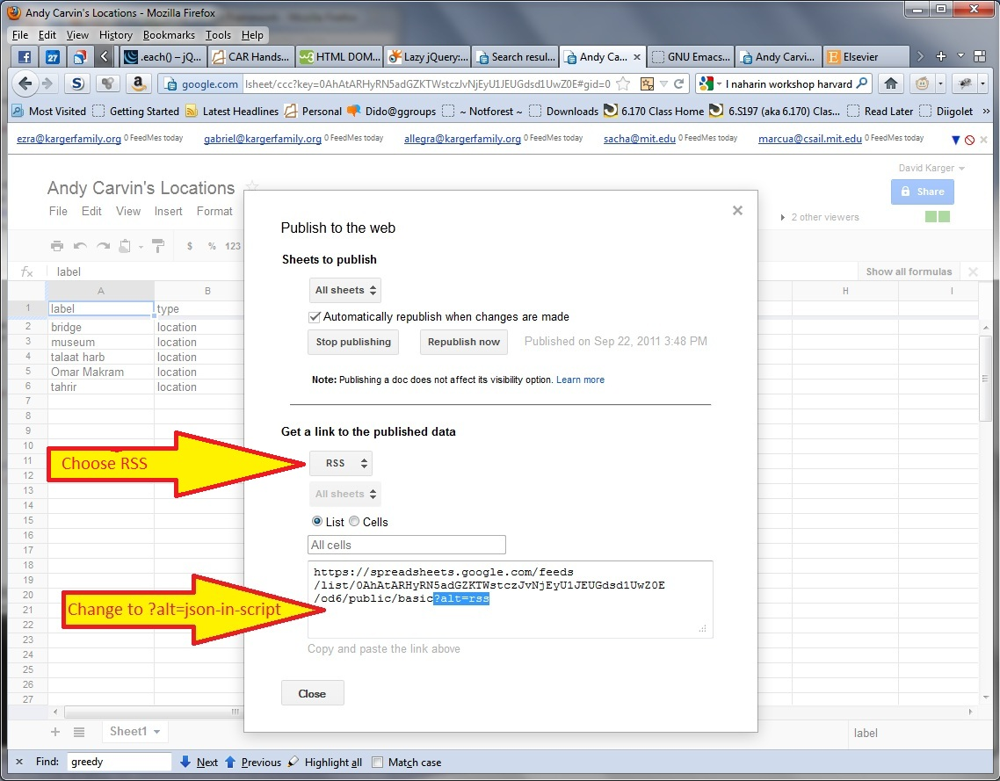

Add the Script |
|
|
To begin using exhibit, you need to put a link to the Exhibit library in the head of your html document:
Right now, it won't do anything. |
|
Plan Your Data |
|
|
To make an Exhibit you need some data. Tabular (spreadsheet) data is a good starting point. We generally think of each data row as describing an Item. Each column describes a different named property of the item. You'll want a header row in your table, giving the names of these properties. The entries in the cells provide values for the various properties of the item. These values can be numbers, strings, dates, etc.
Exhibit imposes few restrictions on your data. It does require that each item have a label to identify it. Make sure that one of your columns headings is "label" and you'll be fine. Exhibit distinguishes items by their label, so if you give two items the same label, Exhibit will think you are talking about the same item twice and merge their properties. So make sure labels are distinct! For this demonstration we're going to work with a collection of Tweets curated by Andy Carvin during the Tahrir Square Arab-Spring riots in Egypt. You can see this collection the Google Spreadsheet to the right. Notice that we have one row per tweet, and column heading naming the particular properties like date, label, url, and username. Looking further to the right, notice that in "keywords" column there are multiple values separated by semicolons. Exhibit knows to break those up (and allows items to have multiple values for a property). | |
Link to Your Data |
|
|
Exhibit can read a variety of tabular data formats, including TSV and CSV. Exhibit's "native" format is JSON, a standard representation of data on the web. It can read some XML formats. Using Babel, you can translate certain other formats, such as excel spreadsheets, into Exhibit json. Exhibit can also directly read from Google Spreadsheets (giving you the ability to dynamically udpdate the data in your presentation). In general, web security features require that your data file be on the same web site as your Exhibit html document. Google Spreadsheets uses a special technique called JSONP to get around this restriction. Your data providers can use it too but it requires learning.
For this hands-on, we've provided a TSV file and a JSON file that you can see to the right. Either one will do to provide the data. To tell Exhibit about your data, you put a link to it in the head of your document. To link to the tsv file, we write
(The
Either will do. Note that you need to specify the format of the file as a "type" argument. If you want to link directly to a Google Spreadsheet, see the discussion at the end of this tutorial. Exhibit has only limited ability to handle errors in the input data files. For example, a stray quotation mark in our tweets TSV file will lead Exhibit to treat the data following it as a quoted string---likely not what you want. And Exhibit is not particularly good about reporting error messages. The best support is provided with the JSON format, where we provide a validation service that tells you if you have any syntax errors in your data file. |
TSV fileJSON file |
Views |
|
|
We've linked to the data, but we haven't yet told Exhibit how and where in the page we want to see it. Exhibit expects us to specify some views of the data. Exhibit offers many types of views---lists, thumbnail galleries, maps, timelines, and charts. We'll begin with the default, the "list of items" view. To produce this, we place a "view" tag in the html wherever we want that view to appear:
You can look at the resulting Exhibit here. It isn't very exciting yet because we haven't specialized the view. But it does already present the data, and includes, at the top, the ability to sort the data by various properties. |
|
Lenses |
|
|
The first improvement we'll make is in the way individual items show in the list. Right now, Exhibit is showing a default view of each item, listing all the properties and their values. We can specialize this view using a Lens. Lenses are templates---pictures of how we want items to look. We specify the HTML that should present a single item, along with "fill in the blanks" instructions that say where to inject the values of specific properties of the displayed item. Here's a simple lens for the tweet data:
This lens just shows the hour property, followed by a colon and the label, which for this data set is just the tweet itself. We give Exhibit a lens template by writing a <div> data-ex-role="lens" </div> tag. Inside this tag we write the HTML of the way we would like a single item to look. When we want to fill in a blank with a particular property like the label, we write <span data-ex-content=".label"></span>. Remember to put the period before the property name. If you put your lens at the top level of your html document, it will be used by all the views in the document. If you put the lens inside the tag defining a particular view, then the lens will only be used in that view. This allows you to include different lenses in different views. Adding this lens makes the tweets look much nicer, as you can see here. |
:
|
Sorting the List View |
|
Note that the list view has ordered the items alphabetically
by label, i.e. tweet. This is the default, and isn't so sensible in this case. We can change the order by adding an data-ex-orders attribute to the view. While we're at it, we can also specify which properties of the data are useful for sorting using data-ex-possible-orders:
If you load the resulting exhibit, you'll see that tweets are now sorted (and grouped) by user, then sub-sorted by hour. You can list several properties, separated by commas, to sort by the first property, then break ties using the second property, and so forth. Exhibit also lets you specify whether to group together items with the same value of the sort property under a common header---ties are grouped by default by you can override by adding the Users can change the sort order and grouping by clicking on the header of the list view, but you can give them a natural starting order. |
:
|
Tabular View |
|
We can add other views, again using the view tag but now specifying the view type using the viewClass attribute. Like different kinds of charts in Excel, different types of views need different configuration options. These options are specified as attributes of the view tag. Let's start with a tabular view. This is basically a normal table, although Exhibit does give the user the ability to sort the table by clicking on the columns headings.
For the tabular view, the key is specifying which columns to display using a comma separated list of property names in |
|
Timeline |
Now let's place our items on a timeline. To do that we need to specify which properties define the start (and optionally end) points of the timeline position of the item. We do so by placing the attributes data-ex-start and (optionally) data-ex-end in the view description. We can also color code the marks on the timeline to reflect some categorization, by setting the data-ex-colorKey option. Each of these options expects the specification of a (period-prefixed) property name that should be used. We can also configure other natural quantities like the the time-unit of the timeline tickmarks (minute, day, week, hour, year etc.) on both the top and bottom bands of the timeline, as well as the spacing of those tickmarks.
The timeline view is an extension in exhibit; it isn't automatically available. You need to include another script in the head of your document, after the main exhibit script, to provide the new view:
The timeline view is shown to the right. If you click on a particular item, you'll get a pop-up bubble with more detail. The bubble contents are determined by the lens associated with this view. If we add this timeline to our previous Exhibit, we get this one |
:
|
View Panels |
|
|
With three views, the presentation is getting a little long. We can pack things together using a View Panel. The View Panel gathers several views together, give each one a title, and lets the user flip between them so that only one is occupying page space at a time. As usual, you define the view panel with an html tag:
Take any views you want managed by the view panel, and put their tags inside the viewPanel tag. That's it! You get the view panel shown to the right. You select views at the top. You can see the overall result in this exhibit.
You can mix any number of view panels with any number of standalone views on the page. One popular approach is to present one "primary" view and then below it a view panel for switching among secondary views. Note that in the view-switching header each view is named by its type. If you have several views of the same type, or just want more informative names, you can add an |
:
|
Filtering with Facets | |
|
Exhibit includes facets that can filter the data being displayed. To specify a facet you specify the expression (e.g. property) that should be used to filter, and optionally a facet type. The default facet, the list facet, simply lists all values of the property; clicking on a value filters down to the items that have the chosen value on that property:
As usual, there are additional options. Besides the obvious "height" of the facet, Besides the default list facet, there as a textsearch facet that offers a textbox where the reader can type arbitrary text that is matched against the content of the items.
For number-valued properties, there is a NumericRange facet (lists of ranges of numbers) and Slider facet (slide to select upper and lower limits for the number value). We don't have uses for those in this exhibit. Adding a whole bunch of facets (and doing some standard CSS discussed below to control how they get laid out) gives us this exhibit; almost done! |
Text: Topics: |
Chaining Properties; Map View |
|
|
We can similarly add a map as we did the timeline. Like the timeline, maps need their own extension script added to the head:
|
|
|
Now that we've included the location data, here's the map tag:
The most important option here specifies which latitude and longitude define the placement of items on the map. This option contains something new: a chain of properties ".location.latlng". The way to read this is as follows: for the item being displayed, look up its location. That will give you the label of another item (one of the four locations). Look up the latlng property of that item. Exhibit lets you chain together arbitrary sequences of properties. Breaking up your data this way is useful because now if you decide to update the latlng of a location you only need to do it in one place, instead of changing the value for every single item at that location. There are also, as with the timeline, options to set the initial center and zoom level of them map, to specify properties that determine the color and size of icons on the map, or even to associate an image or icon with each item that will show on the map---there's no useful icon for this exhibit, but you can see an example in this exhibit of U.S. Presidents Once we've included the 4 "location" objects, they by default become part of the data collection and get displayed in various lists. We don't want that. We use the collection tag to tell Exhibit which items we actually want to show in our views:
Now only the items of (default) type "Item" (namely the tweets) are plotted; the tweets of type "location" are not. |
|
Wrap Up: Css |
|
We've now incorporated all the exhibit tags necessary for our final visualization. It remains to nicely style the result using CSS. This is just a plain html page, so you can style it the usual way. Exhibit assigns specific classes to the various elements it creates, and you can assign styles to those classes in order to style the exhibit elements. The easiest way to identify the styles is using firebug or some other DOM inspection tool: render the page, then use "inspect element" to identify the class that Exhibit has assigned to the rendered element. As an example, the (default) list facets get a class of "exhibit-facet", so we can style them to all float on the same row using the following CSS:
With this done (and more CSS) we produce our final exhibit.
|
|
Using Google Spreadsheets |
|
|
Exhibit can read its data directly out of a Google spreadsheet. Google spreadsheets are nice for shared editing and dynamic updating, but they do tend to load more slowly than your own static data file.
If you want to use a Google Spreadsheet like this, you need to publish it so Exhibit can access (but not edit) the data. To do so, click on the "File" menu and select "Publish to the Web". Click "start publishing", then, under "Get a link to the published data", select "RSS". Copy the resulting link, then change the "alt=rss" at the end to "alt=json-in-script". That will produce the link you want. For our example, for our Egypt Exhibit, you can put the following link to the tweets spreadsheet in the head of the document instead of the previous json or tsv link:
Probably the biggest stumbling block for Google Spreadsheets (or Excel) is dates (which we'll need for the timeline later). There are hundreds of ways to represent dates. Exhibit understands the "official standard" UTC representation of year-month-day followed by hours:minutes:seconds, for example 1997-09-26 13:23:18. So do spreadsheets, but they try to "help" you by translating your dates into their standard format, e.g. 9/26/1997. Even if you format the date properly, they'll change it back under the hood. And why you try to serve it as data for exhibit, they'll serve the wrong format. The best solution we've found is to tell the spreadsheet that your dates are actually text strings. This may involve judicious copying of your data, pasting it as a string, and invoking some concatenation functions. |

Click to see full size.
|
Next Steps |
|
|
As you build your own exhibits, you'll probably want to look at a bunch of examples. Remember, since these are just html files, you can download them and they'll work; then you can start to tweak them. The Exhibit web site has a bunch of examples we've built. We've also set up an exhibit of exhibits that other people have made, to give you an idea of what can be done with the tool. As you build your own, you'll probably want to check the Exhibit reference documentation which lists all the different exhibit tags and the options you can set on them.
If you don't like hand-editing html, we have projects under way to make authoring easier. Our Datapress project provides a wordpress extension that lets you WYSIWYG edit your exhibit into a blog post, and Dido is a (still experimental) standalong WYSIWYG editor for exhibits. |
{kind=link}